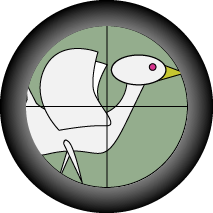
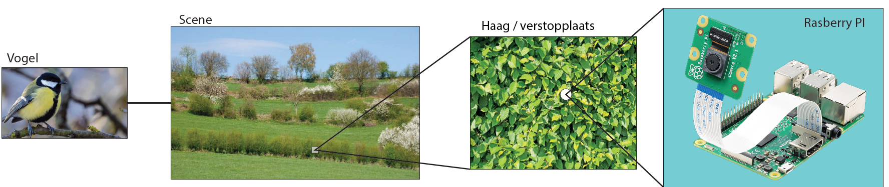
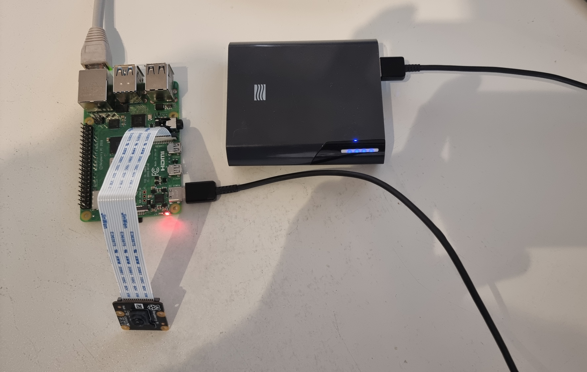
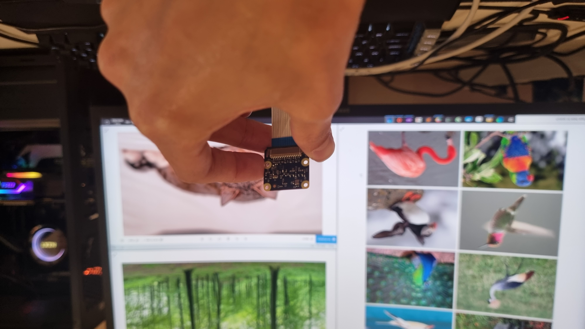
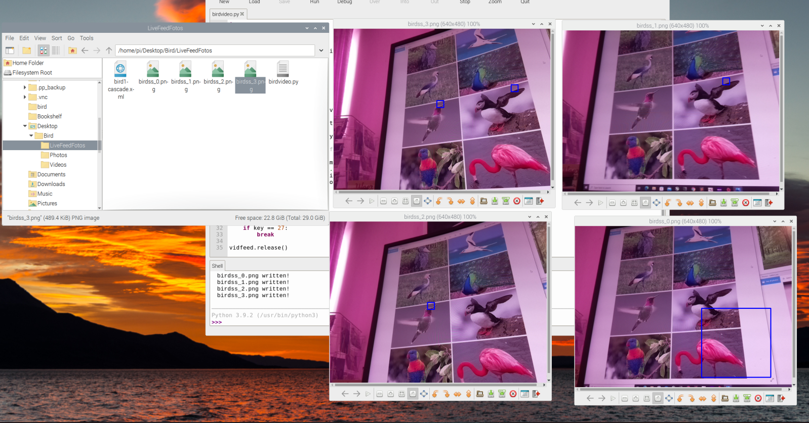
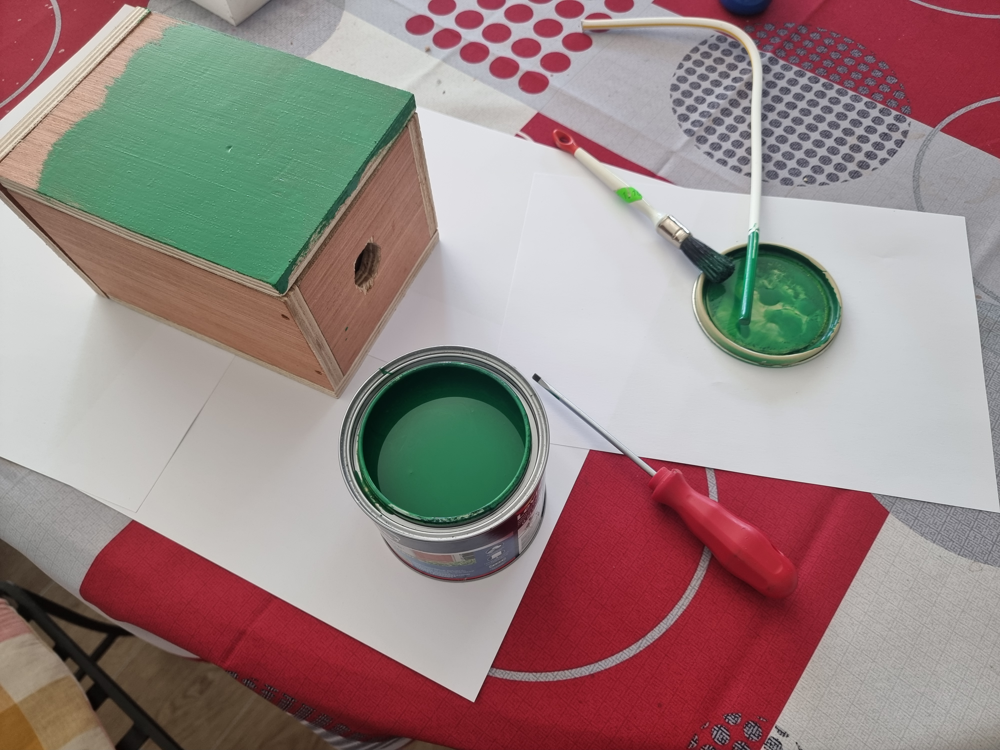

MENU


Project: Bird Spy Cam
Mijn naam is Ben Van Damme ik zit in mijn eerste jaar en volg de richting elektronica-ict met keuze traject application development. Mijn project gaat over een verborgen camera in de natuur die van vogels beelden maakt. Het is de bedoeling dat deze dan worden doorgestuurd naar een smartphone. Waar op we in onze eigen zelf gemaakte applicatie een gallerij van vogel beelden te zien kunnen krijgen.
Gallerij:
Verder >>

Omschrijving:
Behuizing design:
Testbench:
Fysieke behuizing:
We plaatsen de spycam in het wild op een subtiele plaats zodat deze niet gestolen kan worden en deze geen dieren weg jaagt. Je moet in de buurt komen om het beeld materiaal te bemachtigen.
De behuizing is eigenlijk een houte vogelhuisje met plaats voor een raspberry pi in plaats van vogels. Het is de bedoeling dat de camera naar buiten kijkt en krijgt dus hiervoor zijn aparte mount.
Deze afbeeldingen gebruikte ik om het vogel detectie systeem te testen.
Dit is het bena volledig gerealiseerde project enkel nog een dak erop en een laagje verf.
De Hardware:

De hardware bestaat uit een raspberry Pi computertje een camera module voor de raspberry pi en een powerbank verbonden met usb-c. Om configuraties uit te voeren gebruik ik een ethernet kabel om met vnc te verbinden op de laptop.
De eerste Test:

De eerste meer uitgebreide test bestond uit een paar afbeeldingen van verschillende voorwerpen. Er moest nog wat gecalibreerd worden voor dat hij accuraat en consistent de juiste keuze bleef maken.
Eerste Resultaten:

Na wat tijd te spenderen aan het scherpstellen was het resultaat toch behoorlijk.
Verven:

een beetje groen verven zodat het minder opvalt in de natuur.
Terug naar boven? klik hier.Copyright © Thomas More Mechelen-Antwerpen vzw - Campus De Nayer - Professionele bachelor elektronica-ict – 2022